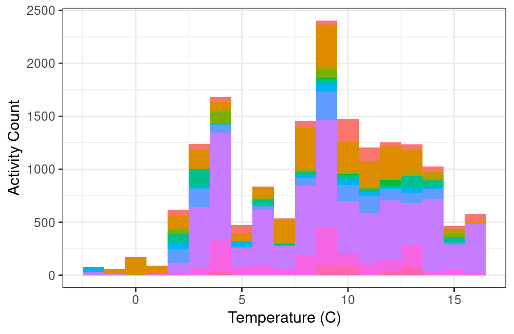
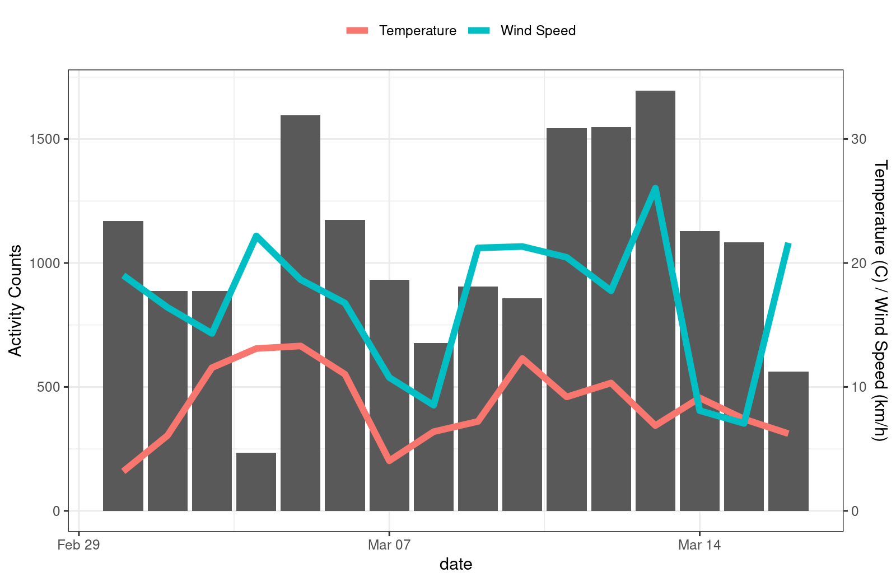

Packages
You’ll need several packages from the tidyverse in
addition to weathercan to complete the
following analysis.
General usage
You can merge weather data with other data frames by linearly interpolating between points.
For example, here we have a dataset of weather data from Kamloops
glimpse(kamloops)## Rows: 4,368
## Columns: 37
## $ station_name <chr> "KAMLOOPS A", "KAMLOOPS A", "KAMLOOPS A", "KAMLOOPS A", "KAMLOOPS A", "KAMLOOPS A", "KAMLO…
## $ station_id <dbl> 51423, 51423, 51423, 51423, 51423, 51423, 51423, 51423, 51423, 51423, 51423, 51423, 51423,…
## $ station_operator <lgl> NA, NA, NA, NA, NA, NA, NA, NA, NA, NA, NA, NA, NA, NA, NA, NA, NA, NA, NA, NA, NA, NA, NA…
## $ prov <chr> "BC", "BC", "BC", "BC", "BC", "BC", "BC", "BC", "BC", "BC", "BC", "BC", "BC", "BC", "BC", …
## $ lat <dbl> 50.7, 50.7, 50.7, 50.7, 50.7, 50.7, 50.7, 50.7, 50.7, 50.7, 50.7, 50.7, 50.7, 50.7, 50.7, …
## $ lon <dbl> -120.45, -120.45, -120.45, -120.45, -120.45, -120.45, -120.45, -120.45, -120.45, -120.45, …
## $ elev <dbl> 345.3, 345.3, 345.3, 345.3, 345.3, 345.3, 345.3, 345.3, 345.3, 345.3, 345.3, 345.3, 345.3,…
## $ climate_id <chr> "1163781", "1163781", "1163781", "1163781", "1163781", "1163781", "1163781", "1163781", "1…
## $ WMO_id <chr> "71887", "71887", "71887", "71887", "71887", "71887", "71887", "71887", "71887", "71887", …
## $ TC_id <chr> "YKA", "YKA", "YKA", "YKA", "YKA", "YKA", "YKA", "YKA", "YKA", "YKA", "YKA", "YKA", "YKA",…
## $ date <date> 2016-01-01, 2016-01-01, 2016-01-01, 2016-01-01, 2016-01-01, 2016-01-01, 2016-01-01, 2016-…
## $ time <dttm> 2016-01-01 00:00:00, 2016-01-01 01:00:00, 2016-01-01 02:00:00, 2016-01-01 03:00:00, 2016-…
## $ year <chr> "2016", "2016", "2016", "2016", "2016", "2016", "2016", "2016", "2016", "2016", "2016", "2…
## $ month <chr> "01", "01", "01", "01", "01", "01", "01", "01", "01", "01", "01", "01", "01", "01", "01", …
## $ day <chr> "01", "01", "01", "01", "01", "01", "01", "01", "01", "01", "01", "01", "01", "01", "01", …
## $ hour <chr> "00:00", "01:00", "02:00", "03:00", "04:00", "05:00", "06:00", "07:00", "08:00", "09:00", …
## $ weather <chr> NA, "Mostly Cloudy", NA, NA, "Cloudy", NA, NA, "Cloudy", NA, "Snow", "Snow", "Snow", "Snow…
## $ hmdx <dbl> NA, NA, NA, NA, NA, NA, NA, NA, NA, NA, NA, NA, NA, NA, NA, NA, NA, NA, NA, NA, NA, NA, NA…
## $ hmdx_flag <chr> NA, NA, NA, NA, NA, NA, NA, NA, NA, NA, NA, NA, NA, NA, NA, NA, NA, NA, NA, NA, NA, NA, NA…
## $ precip_amt <dbl> NA, NA, NA, NA, NA, NA, NA, NA, NA, NA, NA, NA, NA, NA, NA, NA, NA, NA, NA, NA, NA, NA, NA…
## $ precip_amt_flag <chr> NA, NA, NA, NA, NA, NA, NA, NA, NA, NA, NA, NA, NA, NA, NA, NA, NA, NA, NA, NA, NA, NA, NA…
## $ pressure <dbl> 99.95, 99.93, 99.92, 99.90, 99.86, 99.82, 99.80, 99.78, 99.77, 99.78, 99.79, 99.74, 99.69,…
## $ pressure_flag <chr> NA, NA, NA, NA, NA, NA, NA, NA, NA, NA, NA, NA, NA, NA, NA, NA, NA, NA, NA, NA, NA, NA, NA…
## $ rel_hum <dbl> 74, 76, 74, 73, 70, 71, 69, 69, 71, 71, 71, 70, 69, 70, 68, 68, 70, 74, 73, 74, 74, 74, 77…
## $ rel_hum_flag <chr> NA, NA, NA, NA, NA, NA, NA, NA, NA, NA, NA, NA, NA, NA, NA, NA, NA, NA, NA, NA, NA, NA, NA…
## $ temp <dbl> -9.1, -9.6, -9.9, -9.5, -9.4, -9.8, -10.0, -10.2, -10.1, -9.7, -9.4, -9.0, -8.6, -8.2, -8.…
## $ temp_dew <dbl> -12.9, -13.1, -13.7, -13.5, -13.9, -14.1, -14.7, -14.9, -14.4, -14.0, -13.7, -13.5, -13.3,…
## $ temp_dew_flag <chr> NA, NA, NA, NA, NA, NA, NA, NA, NA, NA, NA, NA, NA, NA, NA, NA, NA, NA, NA, NA, NA, NA, NA…
## $ temp_flag <chr> NA, NA, NA, NA, NA, NA, NA, NA, NA, NA, NA, NA, NA, NA, NA, NA, NA, NA, NA, NA, NA, NA, NA…
## $ visib <dbl> 64.4, 64.4, 64.4, 64.4, 64.4, 64.4, 64.4, 64.4, 48.3, 48.3, 48.3, 48.3, 48.3, 48.3, 48.3, …
## $ visib_flag <chr> NA, NA, NA, NA, NA, NA, NA, NA, NA, NA, NA, NA, NA, NA, NA, NA, NA, NA, NA, NA, NA, NA, NA…
## $ wind_chill <dbl> -17, -17, -18, -17, -17, -17, -18, -17, -17, -16, -15, -14, -14, -13, -13, -13, -13, -14, …
## $ wind_chill_flag <chr> NA, NA, NA, NA, NA, NA, NA, NA, NA, NA, NA, NA, NA, NA, NA, NA, NA, NA, NA, NA, NA, NA, NA…
## $ wind_dir <dbl> 13, 11, 11, 11, 11, 10, 9, 7, 7, 10, 11, 10, 10, 13, 11, 10, 10, 9, 12, 10, 13, 12, 10, 12…
## $ wind_dir_flag <chr> NA, NA, NA, NA, NA, NA, NA, NA, NA, NA, NA, NA, NA, NA, NA, NA, NA, NA, NA, NA, NA, NA, NA…
## $ wind_spd <dbl> 19, 20, 20, 18, 18, 16, 23, 15, 14, 15, 12, 11, 12, 9, 10, 12, 11, 12, 10, 11, 11, 6, 6, 4…
## $ wind_spd_flag <chr> NA, NA, NA, NA, NA, NA, NA, NA, NA, NA, NA, NA, NA, NA, NA, NA, NA, NA, NA, NA, NA, NA, NA…As well as a data set of finch visits to an RFID feeder
glimpse(finches)## Rows: 16,886
## Columns: 10
## $ animal_id <fct> 041868FF93, 041868FF93, 041868FF93, 06200003BB, 06200003BB, 06200003BB, 06200003BB, 06200003BB, 0…
## $ date <date> 2016-03-01, 2016-03-01, 2016-03-01, 2016-03-01, 2016-03-01, 2016-03-01, 2016-03-01, 2016-03-01, …
## $ time <dttm> 2016-03-01 06:57:42, 2016-03-01 06:58:41, 2016-03-01 07:07:21, 2016-03-01 07:32:34, 2016-03-01 0…
## $ logger_id <fct> 2300, 2300, 2300, 2400, 2400, 2400, 2400, 2400, 2300, 2300, 2300, 2300, 2300, 2400, 2300, 2400, 2…
## $ species <chr> "Mountain Chickadee", "Mountain Chickadee", "Mountain Chickadee", "House Finch", "House Finch", "…
## $ age <chr> "AHY", "AHY", "AHY", "SY", "SY", "SY", "SY", "SY", "AHY", "AHY", "AHY", "AHY", "AHY", "SY", "AHY"…
## $ sex <chr> "U", "U", "U", "M", "M", "M", "M", "M", "F", "F", "F", "F", "F", "M", "F", "M", "M", "M", "M", "M…
## $ site_name <chr> "Kamloops, BC", "Kamloops, BC", "Kamloops, BC", "Kamloops, BC", "Kamloops, BC", "Kamloops, BC", "…
## $ lon <dbl> -120.3622, -120.3622, -120.3622, -120.3635, -120.3635, -120.3635, -120.3635, -120.3635, -120.3622…
## $ lat <dbl> 50.66967, 50.66967, 50.66967, 50.66938, 50.66938, 50.66938, 50.66938, 50.66938, 50.66967, 50.6696…Although the times in the weather data do not exactly match those in
the finch data, we can merge them together through linear interpolation.
This function uses the approx function from the
stats package under the hood.
Here we specify that we only want the temperature (temp)
column:
finches_temperature <- weather_interp(data = finches, weather = kamloops, cols = "temp")## temp is missing 4 out of 4368 data, interpolation may be less accurate as a result.Ooops! What happened?
Well the weather data on Kamloops returned by weathercan
has times set in the ‘local’ timezone (without) daylight savings. For
simplicity, these times are scored as “UTC” according to R.
kamloops$time[1:5]## [1] "2016-01-01 00:00:00 UTC" "2016-01-01 01:00:00 UTC" "2016-01-01 02:00:00 UTC" "2016-01-01 03:00:00 UTC"
## [5] "2016-01-01 04:00:00 UTC"The finches data, on the other hand, is set in a true
timezone:
finches$time[1:5]## [1] "2016-03-01 06:57:42 UTC" "2016-03-01 06:58:41 UTC" "2016-03-01 07:07:21 UTC" "2016-03-01 07:32:34 UTC"
## [5] "2016-03-01 07:32:35 UTC"This means that it also has daylight savings applied, eep!
To interpolate, the data must be in the same timezone. The easiest
way forward is to convert the finches data to the same,
‘local’ time without daylight savings as the kamloops
data.
First we’ll transform it to non-daylight savings (i.e. Etc/GMT+8,
note that the +8 is intentionally
inverted) with the with_tz() function from the
lubridate package.
Now we’ll force to UTC with the force_tz() function from
the lubridate package.
Now finches and kamloops data are in the
same nominal and actual timezones!
Let’s continue
finches_temperature <- weather_interp(data = finches, weather = kamloops, cols = "temp")## temp is missing 4 out of 4368 data, interpolation may be less accurate as a result.
summary(finches_temperature)## animal_id date time logger_id species
## 0620000513:7624 Min. :2016-03-01 Min. :2016-02-29 22:57:42.00 1500:6370 Length:16886
## 041868D861:2767 1st Qu.:2016-03-05 1st Qu.:2016-03-05 05:54:13.25 2100: 968 Class :character
## 0620000514:1844 Median :2016-03-09 Median :2016-03-09 08:54:47.00 2200:2266 Mode :character
## 06200004F8:1386 Mean :2016-03-08 Mean :2016-03-08 23:45:58.05 2300:3531
## 041868BED6: 944 3rd Qu.:2016-03-13 3rd Qu.:2016-03-13 00:24:58.75 2400:1477
## 06200003BB: 708 Max. :2016-03-16 Max. :2016-03-16 08:39:30.00 2700:2274
## (Other) :1613
## age sex site_name lon lat temp
## Length:16886 Length:16886 Length:16886 Min. :-120.4 Min. :50.67 Min. :-2.578
## Class :character Class :character Class :character 1st Qu.:-120.4 1st Qu.:50.67 1st Qu.: 2.410
## Mode :character Mode :character Mode :character Median :-120.4 Median :50.67 Median : 4.820
## Mean :-120.4 Mean :50.67 Mean : 4.731
## 3rd Qu.:-120.4 3rd Qu.:50.67 3rd Qu.: 7.260
## Max. :-120.4 Max. :50.67 Max. :11.989
##
glimpse(finches_temperature)## Rows: 16,886
## Columns: 11
## $ animal_id <fct> 041868FF93, 041868FF93, 041868FF93, 06200003BB, 06200003BB, 06200003BB, 06200003BB, 06200003BB, 0…
## $ date <date> 2016-03-01, 2016-03-01, 2016-03-01, 2016-03-01, 2016-03-01, 2016-03-01, 2016-03-01, 2016-03-01, …
## $ time <dttm> 2016-02-29 22:57:42, 2016-02-29 22:58:41, 2016-02-29 23:07:21, 2016-02-29 23:32:34, 2016-02-29 2…
## $ logger_id <fct> 2300, 2300, 2300, 2400, 2400, 2400, 2400, 2400, 2300, 2300, 2300, 2300, 2300, 2400, 2300, 2400, 2…
## $ species <chr> "Mountain Chickadee", "Mountain Chickadee", "Mountain Chickadee", "House Finch", "House Finch", "…
## $ age <chr> "AHY", "AHY", "AHY", "SY", "SY", "SY", "SY", "SY", "AHY", "AHY", "AHY", "AHY", "AHY", "SY", "AHY"…
## $ sex <chr> "U", "U", "U", "M", "M", "M", "M", "M", "F", "F", "F", "F", "F", "M", "F", "M", "M", "M", "M", "M…
## $ site_name <chr> "Kamloops, BC", "Kamloops, BC", "Kamloops, BC", "Kamloops, BC", "Kamloops, BC", "Kamloops, BC", "…
## $ lon <dbl> -120.3622, -120.3622, -120.3622, -120.3635, -120.3635, -120.3635, -120.3635, -120.3635, -120.3622…
## $ lat <dbl> 50.66967, 50.66967, 50.66967, 50.66938, 50.66938, 50.66938, 50.66938, 50.66938, 50.66967, 50.6696…
## $ temp <dbl> 4.630667, 4.617556, 4.514250, 4.220056, 4.219861, 4.219667, 4.219472, 4.219278, 4.179028, 4.17825…Let’s take a look at the interpolate points specifically
compare1 <- select(finches_temperature, time, temp)
compare1 <- mutate(compare1, type = "interpolated")
compare2 <- select(kamloops, time, temp)
compare2 <- mutate(compare2, type = "original")
compare <- bind_rows(compare1, compare2)
ggplot(data = compare, aes(x = time, y = temp, colour = type)) +
geom_point(alpha = 0.5) +
scale_x_datetime(limits = range(compare1$time))## Warning: Removed 4000 rows containing missing values (`geom_point()`).What does this mean for our data?
ggplot(data = finches_temperature, aes(x = temp, fill = animal_id)) +
theme_bw() +
theme(legend.position = "none") +
geom_histogram(binwidth = 1) +
labs(x = "Temperature (C)", y = "Activity Count", fill = "Finch ID")
Data gaps
By default, gaps of 2 hours (or 2 days, with a daily scale) will be
interpolated over (i.e. they will be filled with values interpolated
from either side of the gap), but longer gaps will be skipped and filled
with NAs. You can adjust this behaviour with
na_gap. Note that as Environment and Climate Change Canada
data is downloaded on an hourly scale, it makes no sense to apply
na_gap values of less than 1.
In this example, note the larger number of NAs in
temp and how it corresponds to the missing variables in the
weather dataset:
finches_temperature <- weather_interp(data = finches, weather = kamloops,
cols = "temp", na_gap = 1)## temp is missing 4 out of 4368 data, interpolation may be less accurate as a result.
summary(finches_temperature)## animal_id date time logger_id species
## 0620000513:7624 Min. :2016-03-01 Min. :2016-02-29 22:57:42.00 1500:6370 Length:16886
## 041868D861:2767 1st Qu.:2016-03-05 1st Qu.:2016-03-05 05:54:13.25 2100: 968 Class :character
## 0620000514:1844 Median :2016-03-09 Median :2016-03-09 08:54:47.00 2200:2266 Mode :character
## 06200004F8:1386 Mean :2016-03-08 Mean :2016-03-08 23:45:58.05 2300:3531
## 041868BED6: 944 3rd Qu.:2016-03-13 3rd Qu.:2016-03-13 00:24:58.75 2400:1477
## 06200003BB: 708 Max. :2016-03-16 Max. :2016-03-16 08:39:30.00 2700:2274
## (Other) :1613
## age sex site_name lon lat temp
## Length:16886 Length:16886 Length:16886 Min. :-120.4 Min. :50.67 Min. :-2.578
## Class :character Class :character Class :character 1st Qu.:-120.4 1st Qu.:50.67 1st Qu.: 2.397
## Mode :character Mode :character Mode :character Median :-120.4 Median :50.67 Median : 4.819
## Mean :-120.4 Mean :50.67 Mean : 4.729
## 3rd Qu.:-120.4 3rd Qu.:50.67 3rd Qu.: 7.273
## Max. :-120.4 Max. :50.67 Max. :11.989
## NA's :246## # A tibble: 246 × 3
## date time temp
## <date> <dttm> <dbl>
## 1 2016-03-11 2016-03-11 00:08:01 NA
## 2 2016-03-11 2016-03-11 00:08:03 NA
## 3 2016-03-11 2016-03-11 00:08:04 NA
## 4 2016-03-11 2016-03-11 00:08:06 NA
## 5 2016-03-11 2016-03-11 00:22:42 NA
## 6 2016-03-11 2016-03-11 00:22:43 NA
## 7 2016-03-11 2016-03-11 00:22:45 NA
## 8 2016-03-11 2016-03-11 00:22:53 NA
## 9 2016-03-11 2016-03-11 00:22:54 NA
## 10 2016-03-11 2016-03-11 00:23:56 NA
## # ℹ 236 more rows## # A tibble: 4 × 2
## time temp
## <dttm> <dbl>
## 1 2016-02-11 19:00:00 NA
## 2 2016-03-08 13:00:00 NA
## 3 2016-03-11 01:00:00 NA
## 4 2016-04-09 00:00:00 NAMultiple weather columns
We could also add in more than one column at a time:
finches_weather <- weather_interp(data = finches, weather = kamloops,
cols = c("temp", "wind_spd"))## temp is missing 4 out of 4368 data, interpolation may be less accurate as a result.## wind_spd is missing 4 out of 4368 data, interpolation may be less accurate as a result.
summary(finches_weather)## animal_id date time logger_id species
## 0620000513:7624 Min. :2016-03-01 Min. :2016-02-29 22:57:42.00 1500:6370 Length:16886
## 041868D861:2767 1st Qu.:2016-03-05 1st Qu.:2016-03-05 05:54:13.25 2100: 968 Class :character
## 0620000514:1844 Median :2016-03-09 Median :2016-03-09 08:54:47.00 2200:2266 Mode :character
## 06200004F8:1386 Mean :2016-03-08 Mean :2016-03-08 23:45:58.05 2300:3531
## 041868BED6: 944 3rd Qu.:2016-03-13 3rd Qu.:2016-03-13 00:24:58.75 2400:1477
## 06200003BB: 708 Max. :2016-03-16 Max. :2016-03-16 08:39:30.00 2700:2274
## (Other) :1613
## age sex site_name lon lat temp
## Length:16886 Length:16886 Length:16886 Min. :-120.4 Min. :50.67 Min. :-2.578
## Class :character Class :character Class :character 1st Qu.:-120.4 1st Qu.:50.67 1st Qu.: 2.410
## Mode :character Mode :character Mode :character Median :-120.4 Median :50.67 Median : 4.820
## Mean :-120.4 Mean :50.67 Mean : 4.731
## 3rd Qu.:-120.4 3rd Qu.:50.67 3rd Qu.: 7.260
## Max. :-120.4 Max. :50.67 Max. :11.989
##
## wind_spd
## Min. : 0.000
## 1st Qu.: 6.519
## Median :14.096
## Mean :13.062
## 3rd Qu.:17.913
## Max. :41.405
##
glimpse(finches_weather)## Rows: 16,886
## Columns: 12
## $ animal_id <fct> 041868FF93, 041868FF93, 041868FF93, 06200003BB, 06200003BB, 06200003BB, 06200003BB, 06200003BB, 0…
## $ date <date> 2016-03-01, 2016-03-01, 2016-03-01, 2016-03-01, 2016-03-01, 2016-03-01, 2016-03-01, 2016-03-01, …
## $ time <dttm> 2016-02-29 22:57:42, 2016-02-29 22:58:41, 2016-02-29 23:07:21, 2016-02-29 23:32:34, 2016-02-29 2…
## $ logger_id <fct> 2300, 2300, 2300, 2400, 2400, 2400, 2400, 2400, 2300, 2300, 2300, 2300, 2300, 2400, 2300, 2400, 2…
## $ species <chr> "Mountain Chickadee", "Mountain Chickadee", "Mountain Chickadee", "House Finch", "House Finch", "…
## $ age <chr> "AHY", "AHY", "AHY", "SY", "SY", "SY", "SY", "SY", "AHY", "AHY", "AHY", "AHY", "AHY", "SY", "AHY"…
## $ sex <chr> "U", "U", "U", "M", "M", "M", "M", "M", "F", "F", "F", "F", "F", "M", "F", "M", "M", "M", "M", "M…
## $ site_name <chr> "Kamloops, BC", "Kamloops, BC", "Kamloops, BC", "Kamloops, BC", "Kamloops, BC", "Kamloops, BC", "…
## $ lon <dbl> -120.3622, -120.3622, -120.3622, -120.3635, -120.3635, -120.3635, -120.3635, -120.3635, -120.3622…
## $ lat <dbl> 50.66967, 50.66967, 50.66967, 50.66938, 50.66938, 50.66938, 50.66938, 50.66938, 50.66967, 50.6696…
## $ temp <dbl> 4.630667, 4.617556, 4.514250, 4.220056, 4.219861, 4.219667, 4.219472, 4.219278, 4.179028, 4.17825…
## $ wind_spd <dbl> 18.88500, 18.93417, 19.49000, 21.17111, 21.17222, 21.17333, 21.17444, 21.17556, 21.40556, 21.4100…
finches_weather <- finches_weather %>%
group_by(date) %>%
summarize(n = length(time),
temp = mean(temp),
wind_spd = mean(wind_spd))
ggplot(data = finches_weather, aes(x = date, y = n)) +
theme_bw() +
theme(legend.position = "top") +
geom_bar(stat = "identity") +
geom_line(aes(y = temp * 50, colour = "Temperature"), size = 2) +
geom_line(aes(y = wind_spd * 50, colour = "Wind Speed"), size = 2) +
scale_colour_discrete(name = "") +
scale_y_continuous(
name = "Activity Counts",
sec.axis = sec_axis(~. / 50, name = "Temperature (C) / Wind Speed (km/h)"))## Warning: Using `size` aesthetic for lines was deprecated in ggplot2 3.4.0.
## ℹ Please use `linewidth` instead.
## This warning is displayed once every 8 hours.
## Call `lifecycle::last_lifecycle_warnings()` to see where this warning was generated.